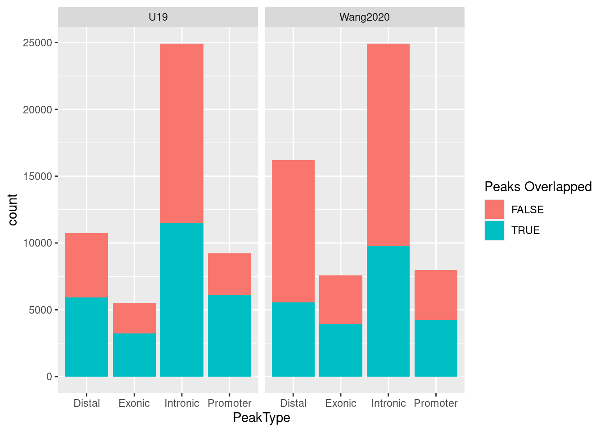
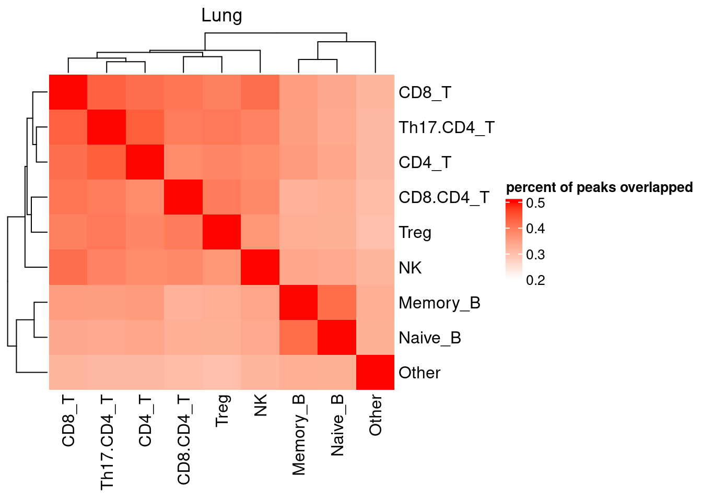
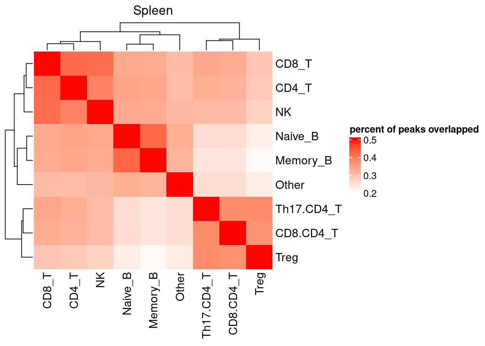
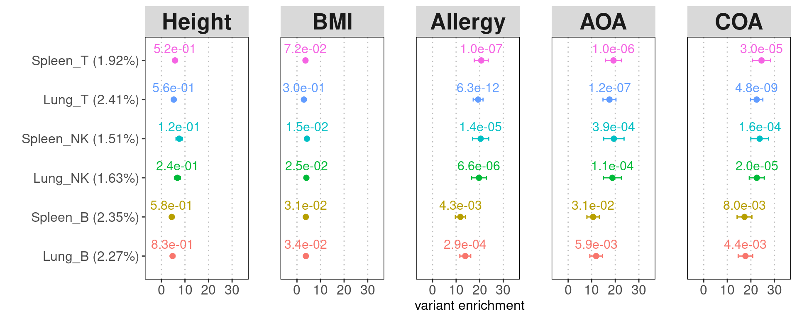
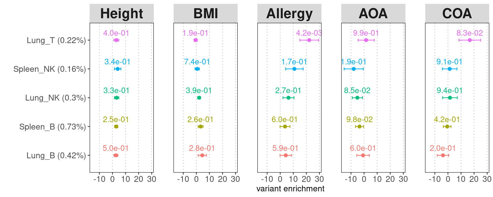
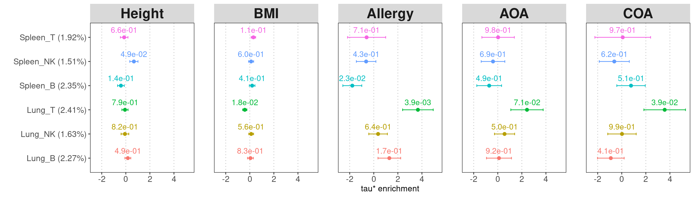
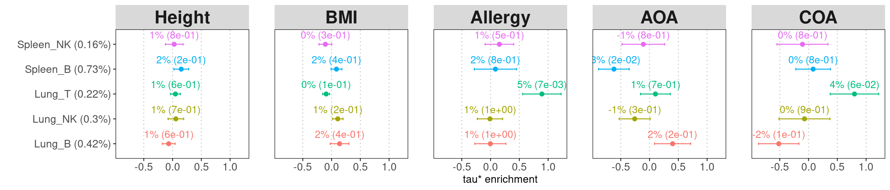
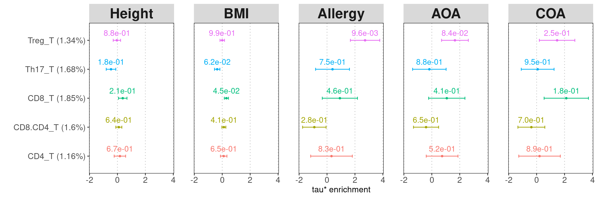

Last updated: 2025-03-26
Checks: 7 0
Knit directory: lung_lymph_scMultiomics/
This reproducible R Markdown analysis was created with workflowr (version 1.7.1). The Checks tab describes the reproducibility checks that were applied when the results were created. The Past versions tab lists the development history.
Great! Since the R Markdown file has been committed to the Git repository, you know the exact version of the code that produced these results.
Great job! The global environment was empty. Objects defined in the global environment can affect the analysis in your R Markdown file in unknown ways. For reproduciblity it’s best to always run the code in an empty environment.
The command set.seed(20221229) was run prior to running
the code in the R Markdown file. Setting a seed ensures that any results
that rely on randomness, e.g. subsampling or permutations, are
reproducible.
Great job! Recording the operating system, R version, and package versions is critical for reproducibility.
Nice! There were no cached chunks for this analysis, so you can be confident that you successfully produced the results during this run.
Great job! Using relative paths to the files within your workflowr project makes it easier to run your code on other machines.
Great! You are using Git for version control. Tracking code development and connecting the code version to the results is critical for reproducibility.
The results in this page were generated with repository version f200d07. See the Past versions tab to see a history of the changes made to the R Markdown and HTML files.
Note that you need to be careful to ensure that all relevant files for
the analysis have been committed to Git prior to generating the results
(you can use wflow_publish or
wflow_git_commit). workflowr only checks the R Markdown
file, but you know if there are other scripts or data files that it
depends on. Below is the status of the Git repository when the results
were generated:
Ignored files:
Ignored: analysis/.RData
Ignored: analysis/.Rhistory
Untracked files:
Untracked: ArchRLogs/
Untracked: Rplots.pdf
Untracked: analysis/.ipynb_checkpoints/
Untracked: analysis/ArchRLogs/
Untracked: analysis/GOBP_B_CELL_ACTIVATION_INVOLVED_IN_IMMUNE_RESPONSE.v2024.1.Hs.gmt
Untracked: analysis/Rplots.pdf
Untracked: analysis/cross_tissue_DE_u19_k10_fastTopics.Rmd
Untracked: analysis/differential_peak_analysis.Rmd
Untracked: analysis/full_atac_h2g_enrichment.Rmd
Untracked: analysis/identify_T_subsets.Rmd
Untracked: analysis/identify_batch_effects_full_atac_k8.Rmd
Untracked: analysis/linking_lung_celltype_OCRs_with_asthma_genetics_archive.Rmd
Untracked: analysis/run_fastTopics.R
Untracked: analysis/run_fastTopics_lungOnly.R
Untracked: analysis/test.pdf
Untracked: analysis/test_GO_enrichment.ipynb
Untracked: analysis/u19_atac_fastTopics.Rmd
Untracked: analysis/u19_full_atac_fastTopics.Rmd
Untracked: analysis/u19_full_atac_fastTopics_k10.Rmd
Untracked: analysis/u19_full_atac_fastTopics_k8.Rmd
Untracked: analysis/u19_lung_atac_fastTopics_no_correction.Rmd
Untracked: analysis/u19_regulon_enrichment.Rmd
Untracked: analysis/ukb-a-446.log
Untracked: analysis/ukb-a-446_GO_immune.log
Untracked: analysis/variants_to_function_u19.Rmd
Untracked: code/.ipynb_checkpoints/
Untracked: code/compute_pancreas_factors.R
Untracked: code/link_variant_to_function.R
Untracked: code/make_plots.R
Untracked: code/run_GO_enrichment.R
Untracked: code/run_fastTopics.R
Untracked: code/run_magma.sh
Untracked: code/run_magma/
Untracked: code/run_topic_DE_analysis.R
Untracked: data/CRE_0_asthma_fine-mapping_summary.RDS
Untracked: data/CRE_0_asthma_fine-mapping_summary.RData
Untracked: data/CRE_0_asthma_fine-mapping_summary.csv
Untracked: data/CRE_0_asthma_fine-mapping_summary.txt
Untracked: data/DA_peaks_Tsub_vs_others.RDS
Untracked: data/DA_peaks_by_cell_type.RDS
Untracked: data/TF_target_sizes_GRN.txt
Untracked: data/Tsuo2022_meta_analysis_asthma_risk_genes.csv
Untracked: data/U19_T_cell_peaks_metadata.RDS
Untracked: data/Wang_2020_T_cell_peaks_metadata.RDS
Untracked: data/annotated_scRNA_data.RDS
Untracked: data/lung_GRN_CD4_T_edges.txt
Untracked: data/lung_GRN_CD8_T_edges.txt
Untracked: data/lung_GRN_Th17_edges.txt
Untracked: data/lung_GRN_Treg_edges.txt
Untracked: output/annotation_reference.txt
Untracked: output/fastTopics
Untracked: output/homer
Untracked: output/ldsc_enrichment
Untracked: output/lung_Th17_dispersion_plot.pdf
Untracked: output/lung_immune_atac_peaks_high_ePIPs.RDS
Untracked: output/no_bkg/
Untracked: output/positions.bed
Untracked: output/topic3/
Untracked: output/u19_analysis
Untracked: output/u19_output
Untracked: test.pdf
Unstaged changes:
Modified: analysis/U19_motif_analysis.ipynb
Modified: analysis/cross_tissue_DE_u19_fastTopics.Rmd
Modified: analysis/gene_set_analysis_for_RNA_topics.Rmd
Modified: analysis/identify_batch_effects_full_atac.Rmd
Modified: analysis/identify_batch_effects_multiomics.Rmd
Modified: analysis/identify_regulatory_programs_u19_GRN.Rmd
Modified: analysis/linking_lung_celltype_OCRs_with_asthma_genetics.Rmd
Modified: analysis/rank_TFs_from_pairwise_comparison.ipynb
Deleted: analysis/test_magma.Rmd
Modified: analysis/u19_h2g_enrichment.Rmd
Modified: analysis/u19_lung_atac_fastTopics.Rmd
Deleted: code/run_fastTopic.R
Deleted: lung_immune_fine_mapping.Rproj
Note that any generated files, e.g. HTML, png, CSS, etc., are not included in this status report because it is ok for generated content to have uncommitted changes.
These are the previous versions of the repository in which changes were
made to the R Markdown (analysis/h2g_enrichment_u19.Rmd)
and HTML (docs/h2g_enrichment_u19.html) files. If you’ve
configured a remote Git repository (see ?wflow_git_remote),
click on the hyperlinks in the table below to view the files as they
were in that past version.
| File | Version | Author | Date | Message |
|---|---|---|---|---|
| Rmd | f200d07 | Jing Gu | 2025-03-26 | tau* enrichment vs. heritability enrichment |
tau* used to estimate cell-type specific enrichment
conditional on other annotations_prop_h2*total_h2 used to estimate
heritability enrichment, a robust quantity regardless of annotation
groups_prop_h2: %heritability explained by one annotation
\(C_c\)
\[h(C_c) = \sum_{j \in C_c}\hat {Var}({\beta_j)} = \sum_{j \in C_c}\sum_{c':j \in C_{c'}} \hat \tau_c\] For overlapping annotations, the heritability for each annotation is calculated as the sum of the coefficients \(\hat \tau_c\) of all annotations, where each variant j belongs to.
A barplot of summarizing peak counts by types show Wang et al. identified more peaks in distal and exonic regions but fewer ones in promoters compared to our dataset. The color indicates whether each query peak in U19 overlaps with the one in Wang et al. We see more than 50% peaks in U19 overlapped with ones in Wang et al., while these overlapped peaks take up less than 50% of peaks in Wang et al. 
We first grouped cells by tissue and cell-type pair and then called peaks separately. This allows us to identify peaks specific to each pair of tissue and cell type, as shown in the heatmap. The highest overlap percent across all is 50%, and some spleen T subsets show more distinct peaks compared to all other cell types.
[1] "Check whether all peaks called from individual cell types overlap with joint peak set:" Lung_CD4_T Lung_CD8.CD4_T Lung_CD8_T Lung_Memory_B
TRUE TRUE TRUE TRUE
Lung_NK Lung_Naive_B Lung_Other Lung_Th17.CD4_T
TRUE TRUE TRUE TRUE
Lung_Treg Spleen_CD4_T Spleen_CD8.CD4_T Spleen_CD8_T
TRUE TRUE TRUE TRUE
Spleen_Memory_B Spleen_NK Spleen_Naive_B Spleen_Other
TRUE TRUE TRUE TRUE
Spleen_Th17.CD4_T Spleen_Treg
TRUE TRUE 
[1] "A table of number of overlapping marker peaks between cell types:" Lung_B Lung_NK Lung_T Spleen_B Spleen_NK Spleen_T
Lung_B 12153 64 18 6969 36 1
Lung_NK 64 8748 414 90 2231 41
Lung_T 18 414 6577 22 388 443
Spleen_B 6969 90 22 20941 53 1
Spleen_NK 36 2231 388 53 4747 56
Spleen_T 1 41 443 1 56 1129The union set of peaks from U19 atac-seq data were first lifted over to hg19. The following table shows the change in genome builds only made 1% of peaks have inconsistent width.
For individual test, the quantity of heritability enrichment is used to demonstrate overall contribution of each annotation. We can use p-values for cell-type specific coefficients to compare their contributions across cell types.
Legends:
Peaks called from individual cell type
All lung and spleen lymphocytes show significant enrichment for genetic risks of asthma and related diseases, but not for BMI and height. B cells are less significant than T and NK cells. 
cell-type specific peaks
To avoid unstable estimation, we extended each cell-type specific peak by 250bp. Spleen T cells were not shown due to very low number of cell-type specific peaks. Among all cell-type specific peaks, Only lung T cells show significant enrichment for Allergy and COA, but not others.

Legends:
Individual called peaks
Lung T cells remain significant conditional on all other major lymphocytes.
Joining with `by = join_by(trait)`
Joining with `by = join_by(Category)` Cell-type specific peaks
To estimate cell-type specific heritability, we need to sum up the coefficients for SNPs uniquely contained in the annotation. The approximate way is to estimate with cell-type specific peaks. Here we estimated lung T specific peaks explain around 5% heritability of Allergy and COA risks.
Joining with `by = join_by(trait)`
Joining with `by = join_by(Category)`
I used peaks called from individual cell type to run joint enrichment analyse. Regulatory T cells remain significantly enriched for genetic risks for allergy and AOA, conditional on all other lung T subsets.
Joining with `by = join_by(trait)`
Joining with `by = join_by(Category)`
R version 4.2.0 (2022-04-22)
Platform: x86_64-pc-linux-gnu (64-bit)
Running under: CentOS Linux 7 (Core)
Matrix products: default
BLAS/LAPACK: /software/openblas-0.3.13-el7-x86_64/lib/libopenblas_haswellp-r0.3.13.so
locale:
[1] LC_CTYPE=en_US.UTF-8 LC_NUMERIC=C LC_TIME=C
[4] LC_COLLATE=C LC_MONETARY=C LC_MESSAGES=C
[7] LC_PAPER=C LC_NAME=C LC_ADDRESS=C
[10] LC_TELEPHONE=C LC_MEASUREMENT=C LC_IDENTIFICATION=C
attached base packages:
[1] stats4 grid stats graphics grDevices utils datasets
[8] methods base
other attached packages:
[1] ComplexHeatmap_2.14.0 rtracklayer_1.58.0
[3] colorRamp2_0.1.0 rhdf5_2.42.1
[5] SummarizedExperiment_1.28.0 Biobase_2.58.0
[7] MatrixGenerics_1.10.0 Rcpp_1.0.14
[9] Matrix_1.6-5 GenomicRanges_1.50.2
[11] GenomeInfoDb_1.34.9 IRanges_2.32.0
[13] S4Vectors_0.36.2 BiocGenerics_0.44.0
[15] matrixStats_1.5.0 data.table_1.17.0
[17] stringr_1.5.1 plyr_1.8.9
[19] magrittr_2.0.3 ggplot2_3.5.1
[21] gtable_0.3.6 gtools_3.9.5
[23] gridExtra_2.3 ArchR_1.0.2
[25] dplyr_1.1.4
loaded via a namespace (and not attached):
[1] bitops_1.0-9 fs_1.6.5 doParallel_1.0.17
[4] RColorBrewer_1.1-3 rprojroot_2.0.4 tools_4.2.0
[7] bslib_0.9.0 R6_2.6.1 colorspace_2.1-1
[10] rhdf5filters_1.10.1 GetoptLong_1.0.5 withr_3.0.2
[13] tidyselect_1.2.1 compiler_4.2.0 git2r_0.33.0
[16] cli_3.6.4 Cairo_1.6-2 DelayedArray_0.24.0
[19] labeling_0.4.3 sass_0.4.9 scales_1.3.0
[22] digest_0.6.37 Rsamtools_2.14.0 rmarkdown_2.29
[25] XVector_0.38.0 pkgconfig_2.0.3 htmltools_0.5.8.1
[28] fastmap_1.2.0 rlang_1.1.5 GlobalOptions_0.1.2
[31] rstudioapi_0.17.1 shape_1.4.6 jquerylib_0.1.4
[34] BiocIO_1.8.0 generics_0.1.3 farver_2.1.2
[37] jsonlite_1.9.1 BiocParallel_1.32.6 RCurl_1.98-1.16
[40] GenomeInfoDbData_1.2.9 munsell_0.5.1 Rhdf5lib_1.20.0
[43] lifecycle_1.0.4 stringi_1.8.4 whisker_0.4.1
[46] yaml_2.3.10 zlibbioc_1.44.0 parallel_4.2.0
[49] promises_1.3.2 crayon_1.5.3 lattice_0.22-6
[52] Biostrings_2.66.0 circlize_0.4.15 knitr_1.49
[55] pillar_1.10.1 rjson_0.2.23 codetools_0.2-20
[58] XML_3.99-0.18 glue_1.8.0 evaluate_1.0.3
[61] vctrs_0.6.5 png_0.1-8 httpuv_1.6.15
[64] foreach_1.5.2 clue_0.3-66 cachem_1.1.0
[67] xfun_0.51 restfulr_0.0.15 later_1.4.1
[70] tibble_3.2.1 iterators_1.0.14 GenomicAlignments_1.34.1
[73] workflowr_1.7.1 cluster_2.1.8.1